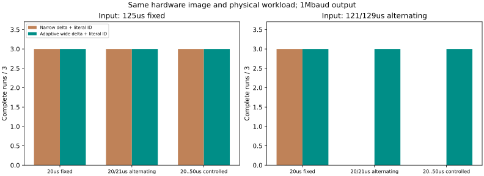
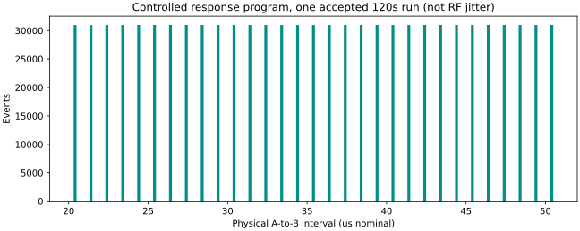

Pico W＋DK9577，原三线与3.0V端点不变，UART 1Mbaud。
51正式批次，4,896,000实际输入，4,824,000事件完整身份放行。42批完整；9批预定编码带宽/200ms阻塞压力明确拒收。三批120秒每批960,000次实际输入/响应/完整身份；独立解析全部通过。冒烟和统一入口自检另存，不混入正式统计。

输入间隔可固定125us或交替121/129us；响应可固定20us、交替20/21us或受控20..50us。即使日志环满，DUT仍继续同一物理响应计划，避免把日志失败与改变DUT负载混为因果。codec3保留字面32bit身份，按真实捕获的时间差选择窄码或ZigZag/规范ULEB128宽码；不依据预定程序补造时间戳，原始20B字段CRC必须一致。
最长一批原始字段19,200,000字节，编码载荷7,109,548字节，加二进制头共7,469,548字节。记录槽仍4×128×20B，不能据此说主机内存恒定或所有高熵输入均可8k。ZigZag/ULEB128是已有技术，研究增量须来自本仪器完整性、可解释拒收和同负载实测。

121/129us是平均8k，不能说每次125us。20..50us由测试固件生成；本图验证仪器在时延变化时仍完整重建，不代表ESB或鼠标的自然抖动。DK输出tick为内部比较事件，Pico测实际A/B端点。5MS/s、200ns网格和微秒换算均标称；外部参考尚缺，采样率估计为空，不承诺准确度或专利新颖性。
| 组 | run | 输入偏移样本 | 响应模式 | 编码 | 结果 | 证据 |
|---|---|---|---|---|---|---|
| factorial | 2026125100 | 0 | 0 | 2 | OK | 记录 |
| factorial | 2026125101 | 0 | 0 | 3 | OK | 记录 |
| factorial | 2026125102 | 0 | 1 | 2 | OK | 记录 |
| factorial | 2026125103 | 0 | 1 | 3 | OK | 记录 |
| factorial | 2026125104 | 0 | 2 | 2 | OK | 记录 |
| factorial | 2026125105 | 0 | 2 | 3 | OK | 记录 |
| factorial | 2026125106 | 20 | 0 | 2 | OK | 记录 |
| factorial | 2026125107 | 20 | 0 | 3 | OK | 记录 |
| factorial | 2026125108 | 20 | 1 | 2 | META_INVALID | 记录 |
| factorial | 2026125109 | 20 | 1 | 3 | OK | 记录 |
| factorial | 2026125110 | 20 | 2 | 2 | META_INVALID | 记录 |
| factorial | 2026125111 | 20 | 2 | 3 | OK | 记录 |
| factorial | 2026125112 | 0 | 0 | 2 | OK | 记录 |
| factorial | 2026125113 | 0 | 0 | 3 | OK | 记录 |
| factorial | 2026125114 | 0 | 1 | 2 | OK | 记录 |
| factorial | 2026125115 | 0 | 1 | 3 | OK | 记录 |
| factorial | 2026125116 | 0 | 2 | 2 | OK | 记录 |
| factorial | 2026125117 | 0 | 2 | 3 | OK | 记录 |
| factorial | 2026125118 | 20 | 0 | 2 | OK | 记录 |
| factorial | 2026125119 | 20 | 0 | 3 | OK | 记录 |
| factorial | 2026125120 | 20 | 1 | 2 | META_INVALID | 记录 |
| factorial | 2026125121 | 20 | 1 | 3 | OK | 记录 |
| factorial | 2026125122 | 20 | 2 | 2 | META_INVALID | 记录 |
| factorial | 2026125123 | 20 | 2 | 3 | OK | 记录 |
| factorial | 2026125124 | 0 | 0 | 2 | OK | 记录 |
| factorial | 2026125125 | 0 | 0 | 3 | OK | 记录 |
| factorial | 2026125126 | 0 | 1 | 2 | OK | 记录 |
| factorial | 2026125127 | 0 | 1 | 3 | OK | 记录 |
| factorial | 2026125128 | 0 | 2 | 2 | OK | 记录 |
| factorial | 2026125129 | 0 | 2 | 3 | OK | 记录 |
| factorial | 2026125130 | 20 | 0 | 2 | OK | 记录 |
| factorial | 2026125131 | 20 | 0 | 3 | OK | 记录 |
| factorial | 2026125132 | 20 | 1 | 2 | META_INVALID | 记录 |
| factorial | 2026125133 | 20 | 1 | 3 | OK | 记录 |
| factorial | 2026125134 | 20 | 2 | 2 | META_INVALID | 记录 |
| factorial | 2026125135 | 20 | 2 | 3 | OK | 记录 |
| factorial | 2026125136 | 20 | 2 | 3 | META_INVALID | 记录 |
| factorial | 2026125137 | 20 | 2 | 3 | OK | 记录 |
| factorial | 2026125138 | 20 | 2 | 3 | META_INVALID | 记录 |
| factorial | 2026125139 | 20 | 2 | 3 | OK | 记录 |
| factorial | 2026125140 | 20 | 2 | 3 | META_INVALID | 记录 |
| factorial | 2026125141 | 20 | 2 | 3 | OK | 记录 |
| ten_seconds | 2026125200 | 20 | 2 | 3 | OK | 记录 |
| ten_seconds | 2026125201 | 20 | 2 | 3 | OK | 记录 |
| ten_seconds | 2026125202 | 20 | 2 | 3 | OK | 记录 |
| sixty_seconds | 2026125300 | 20 | 2 | 3 | OK | 记录 |
| sixty_seconds | 2026125301 | 20 | 2 | 3 | OK | 记录 |
| sixty_seconds | 2026125302 | 20 | 2 | 3 | OK | 记录 |
| maximum | 2026125400 | 20 | 2 | 3 | OK | 记录 |
| maximum | 2026125401 | 20 | 2 | 3 | OK | 记录 |
| maximum | 2026125402 | 20 | 2 | 3 | OK | 记录 |